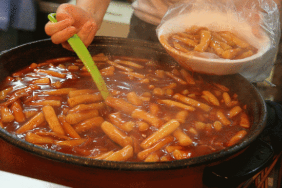

유리네와의
첫만남

저는 어릴 때부터 떡볶이를 참말 좋아했습니다.
그렇게 떡볶이 러버로서
쪼매와 멍텅구리를 전전하던
공릉 생활 3년차 ...
어느날 갑자기

공릉역 근처에 사는 친구에 의해 유리네 떡볶이를 만났습니다..
냠...
냠...
이건..
공릉에는 맛있고 유명한
떡볶이집이 많습니다.
쪼매, 멍텅구리…
그러나 저는 공릉의 떡볶이 대왕은
라고 생각합니다.
유리네 떡볶이에 중독된 이후,
얼마나 자주 유리네를 먹었는지
얼마나 많은 사람에게 유리네를
전파했는지 정리해보았습니다.
저는 어릴 때부터 떡볶이를 참말 좋아했습니다.
그렇게 떡볶이 러버로서
쪼매와 멍텅구리를 전전하던
공릉 생활 3년차 ...
어느날 갑자기
공릉역 근처에 사는 친구에 의해 유리네 떡볶이를 만났습니다..
이건..

그렇게 유리네에 중독된 저는
유리네를
떡볶이와 순대를 좋아하는 친구 H에게 가장 먼저 영업했습니다.
H양은 이렇게 말했습니다...
이후 다음 학기 독일로
교환학생을 떠난 H양은
이런 톡을 보내왔습니다.
H양과 함께 S양과 Y양을 불러일으켰습니다.
S양과 Y양은 이렇게 말했습니다...
그렇게 그녀들도
유리네에 중독되었습니다.
맛있는 분식집이 많은 청주에 사는
친구들에게 전파했습니다.
이들은 이렇게 말했습니다...
공릉과 너무 멀리 사는 친구들은
공릉에 놀러올 때
그리고 그냥 청주에 있을 때도
유리네를 찾았습니다.
블로그에 유리네가 많이 등장한 나머지.
블로그 이웃들도 전파당했습니다.
떡볶이를 좋아하시나요?
그렇다면 유리네를 꼭 한 번 먹어봤으면 좋겠습니댜..
유리네 지도와 함께 마무리합니다.